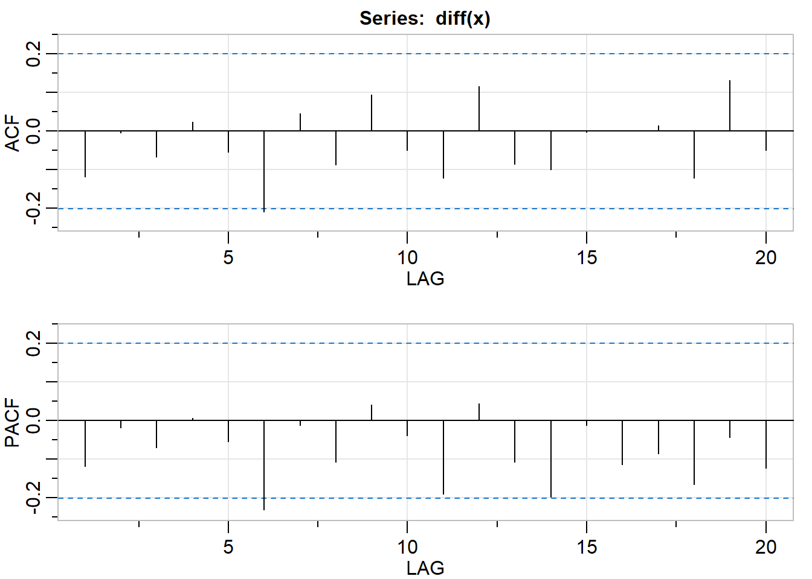
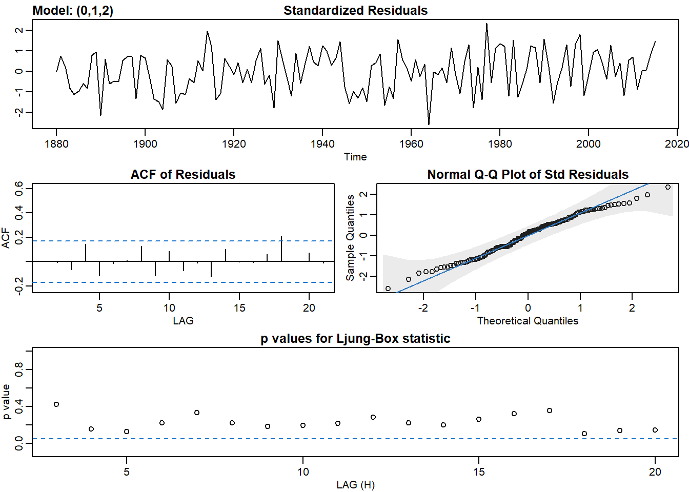

12 Chapter 6 Lab
12.1 Forecasting with ARIMA
library(astsa)# Plot P/ACF pair of differenced data
acf2(diff(x))
## [,1] [,2] [,3] [,4] [,5] [,6] [,7] [,8] [,9] [,10] [,11] [,12]
## ACF -0.12 0.00 -0.07 0.02 -0.06 -0.21 0.05 -0.09 0.09 -0.05 -0.12 0.12
## PACF -0.12 -0.02 -0.07 0.01 -0.05 -0.23 -0.01 -0.11 0.04 -0.04 -0.19 0.04
## [,13] [,14] [,15] [,16] [,17] [,18] [,19] [,20]
## ACF -0.09 -0.1 0.00 0.00 0.01 -0.12 0.13 -0.05
## PACF -0.11 -0.2 -0.01 -0.11 -0.09 -0.17 -0.04 -0.12# Fit model - check t-table and diagnostics
sarima(x, 1, 1, 0)## initial value 0.137947
## iter 2 value 0.130725
## iter 3 value 0.130723
## iter 4 value 0.130723
## iter 4 value 0.130723
## iter 4 value 0.130723
## final value 0.130723
## converged
## initial value 0.128980
## iter 2 value 0.128956
## iter 3 value 0.128954
## iter 3 value 0.128954
## iter 3 value 0.128954
## final value 0.128954
## converged## $fit
##
## Call:
## stats::arima(x = xdata, order = c(p, d, q), seasonal = list(order = c(P, D,
## Q), period = S), xreg = constant, transform.pars = trans, fixed = fixed,
## optim.control = list(trace = trc, REPORT = 1, reltol = tol))
##
## Coefficients:
## ar1 constant
## -0.1192 0.0788
## s.e. 0.1000 0.1023
##
## sigma^2 estimated as 1.294: log likelihood = -153.24, aic = 312.48
##
## $degrees_of_freedom
## [1] 97
##
## $ttable
## Estimate SE t.value p.value
## ar1 -0.1192 0.1000 -1.1921 0.2361
## constant 0.0788 0.1023 0.7707 0.4428
##
## $AIC
## [1] 3.156391
##
## $AICc
## [1] 3.157653
##
## $BIC
## [1] 3.235031# Forecast the data 20 time periods ahead
sarima.for(x, n.ahead = 20, p = 1, d = 1, q = 0) ## $pred
## Time Series:
## Start = 101
## End = 120
## Frequency = 1
## [1] 37.93860 38.03106 38.10825 38.18726 38.26606 38.34488 38.42369 38.50251
## [9] 38.58133 38.66015 38.73897 38.81778 38.89660 38.97542 39.05424 39.13306
## [17] 39.21187 39.29069 39.36951 39.44833
##
## $se
## Time Series:
## Start = 101
## End = 120
## Frequency = 1
## [1] 1.137555 1.515934 1.826118 2.089843 2.323929 2.536493 2.732572 2.915493
## [9] 3.087597 3.250601 3.405813 3.554253 3.696737 3.833930 3.966381 4.094549
## [17] 4.218825 4.339543 4.456993 4.57142712.2 Global Temp data
head(globtemp)## [1] -0.20 -0.11 -0.10 -0.20 -0.28 -0.31plot(globtemp)# Fit an ARIMA(0,1,2) to globtemp and check the fit
sarima(globtemp, 0,1,2)## initial value -2.220513
## iter 2 value -2.294887
## iter 3 value -2.307682
## iter 4 value -2.309170
## iter 5 value -2.310360
## iter 6 value -2.311251
## iter 7 value -2.311636
## iter 8 value -2.311648
## iter 9 value -2.311649
## iter 9 value -2.311649
## iter 9 value -2.311649
## final value -2.311649
## converged
## initial value -2.310187
## iter 2 value -2.310197
## iter 3 value -2.310199
## iter 4 value -2.310201
## iter 5 value -2.310202
## iter 5 value -2.310202
## iter 5 value -2.310202
## final value -2.310202
## converged
## $fit
##
## Call:
## stats::arima(x = xdata, order = c(p, d, q), seasonal = list(order = c(P, D,
## Q), period = S), xreg = constant, transform.pars = trans, fixed = fixed,
## optim.control = list(trace = trc, REPORT = 1, reltol = tol))
##
## Coefficients:
## ma1 ma2 constant
## -0.3984 -0.2173 0.0072
## s.e. 0.0808 0.0768 0.0033
##
## sigma^2 estimated as 0.00982: log likelihood = 120.32, aic = -232.64
##
## $degrees_of_freedom
## [1] 132
##
## $ttable
## Estimate SE t.value p.value
## ma1 -0.3984 0.0808 -4.9313 0.0000
## ma2 -0.2173 0.0768 -2.8303 0.0054
## constant 0.0072 0.0033 2.1463 0.0337
##
## $AIC
## [1] -1.723268
##
## $AICc
## [1] -1.721911
##
## $BIC
## [1] -1.637185# Forecast data 35 years into the future
sarima.for(globtemp, 35, 0,1,2)## $pred
## Time Series:
## Start = 2016
## End = 2050
## Frequency = 1
## [1] 0.7995567 0.7745381 0.7816919 0.7888457 0.7959996 0.8031534 0.8103072
## [8] 0.8174611 0.8246149 0.8317688 0.8389226 0.8460764 0.8532303 0.8603841
## [15] 0.8675379 0.8746918 0.8818456 0.8889995 0.8961533 0.9033071 0.9104610
## [22] 0.9176148 0.9247687 0.9319225 0.9390763 0.9462302 0.9533840 0.9605378
## [29] 0.9676917 0.9748455 0.9819994 0.9891532 0.9963070 1.0034609 1.0106147
##
## $se
## Time Series:
## Start = 2016
## End = 2050
## Frequency = 1
## [1] 0.09909556 0.11564576 0.12175580 0.12757353 0.13313729 0.13847769
## [7] 0.14361964 0.14858376 0.15338730 0.15804492 0.16256915 0.16697084
## [13] 0.17125943 0.17544322 0.17952954 0.18352490 0.18743511 0.19126540
## [19] 0.19502047 0.19870459 0.20232164 0.20587515 0.20936836 0.21280424
## [25] 0.21618551 0.21951471 0.22279416 0.22602604 0.22921235 0.23235497
## [31] 0.23545565 0.23851603 0.24153763 0.24452190 0.24747019Pure seasonal model takes 4 more parameters P, S, D, Q
# Plot sample P/ACF to lag 60 and compare to the true values
acf2(x, max.lag = 60)
## [,1] [,2] [,3] [,4] [,5] [,6] [,7] [,8] [,9] [,10] [,11] [,12] [,13]
## ACF 0.9 0.82 0.73 0.64 0.56 0.50 0.48 0.45 0.44 0.42 0.40 0.4 0.37
## PACF 0.9 0.04 -0.07 -0.04 -0.02 0.05 0.15 0.03 0.03 -0.07 0.04 0.1 -0.09
## [,14] [,15] [,16] [,17] [,18] [,19] [,20] [,21] [,22] [,23] [,24] [,25]
## ACF 0.35 0.36 0.36 0.37 0.36 0.36 0.34 0.34 0.32 0.29 0.27 0.20
## PACF 0.05 0.13 0.04 0.02 -0.08 0.06 -0.06 0.09 -0.02 -0.11 -0.01 -0.19
## [,26] [,27] [,28] [,29] [,30] [,31] [,32] [,33] [,34] [,35] [,36] [,37]
## ACF 0.16 0.12 0.10 0.07 0.03 0.02 0.00 -0.03 -0.06 -0.08 -0.08 -0.09
## PACF 0.02 0.04 0.02 -0.11 -0.10 0.08 -0.04 -0.11 -0.07 0.07 0.02 0.02
## [,38] [,39] [,40] [,41] [,42] [,43] [,44] [,45] [,46] [,47] [,48] [,49]
## ACF -0.09 -0.07 -0.06 -0.05 -0.07 -0.06 -0.07 -0.08 -0.08 -0.07 -0.07 -0.07
## PACF 0.01 0.00 -0.02 0.03 0.00 0.06 -0.04 -0.02 0.07 0.15 -0.10 -0.04
## [,50] [,51] [,52] [,53] [,54] [,55] [,56] [,57] [,58] [,59] [,60]
## ACF -0.08 -0.11 -0.13 -0.17 -0.21 -0.24 -0.29 -0.32 -0.35 -0.34 -0.32
## PACF -0.05 -0.03 -0.02 -0.02 -0.15 -0.06 -0.13 0.00 0.01 0.05 -0.05# Fit the seasonal model to x
sarima(x, p = 0, d = 0, q = 0, P = 1, D = 0, Q = 1, S = 12)## initial value 0.958236
## iter 2 value 0.876547
## iter 3 value 0.812976
## iter 4 value 0.777142
## iter 5 value 0.747937
## iter 6 value 0.725263
## iter 7 value 0.719720
## iter 8 value 0.693755
## iter 9 value 0.690447
## iter 10 value 0.681477
## iter 11 value 0.680611
## iter 12 value 0.680126
## iter 13 value 0.679664
## iter 14 value 0.678787
## iter 15 value 0.678244
## iter 16 value 0.678215
## iter 17 value 0.678182
## iter 18 value 0.678167
## iter 19 value 0.678158
## iter 20 value 0.678128
## iter 21 value 0.678102
## iter 22 value 0.678085
## iter 23 value 0.678084
## iter 24 value 0.678084
## iter 25 value 0.678083
## iter 26 value 0.678083
## iter 27 value 0.678083
## iter 28 value 0.678083
## iter 29 value 0.678083
## iter 29 value 0.678083
## final value 0.678083
## converged
## initial value 1.316632
## iter 2 value 1.078864
## iter 3 value 1.008425
## iter 4 value 0.990485
## iter 5 value 0.972791
## iter 6 value 0.957820
## iter 7 value 0.946498
## iter 8 value 0.936672
## iter 9 value 0.929951
## iter 10 value 0.915219
## iter 11 value 0.913770
## iter 12 value 0.904973
## iter 13 value 0.903657
## iter 14 value 0.903549
## iter 15 value 0.903545
## iter 16 value 0.903544
## iter 17 value 0.903543
## iter 18 value 0.903542
## iter 19 value 0.903542
## iter 19 value 0.903542
## iter 19 value 0.903542
## final value 0.903542
## converged## $fit
##
## Call:
## stats::arima(x = xdata, order = c(p, d, q), seasonal = list(order = c(P, D,
## Q), period = S), xreg = xmean, include.mean = FALSE, transform.pars = trans,
## fixed = fixed, optim.control = list(trace = trc, REPORT = 1, reltol = tol))
##
## Coefficients:
## sar1 sma1 xmean
## 0.7141 -0.2117 34.4740
## s.e. 0.1099 0.1181 0.5357
##
## sigma^2 estimated as 5.785: log likelihood = -232.25, aic = 472.5
##
## $degrees_of_freedom
## [1] 97
##
## $ttable
## Estimate SE t.value p.value
## sar1 0.7141 0.1099 6.4973 0.0000
## sma1 -0.2117 0.1181 -1.7927 0.0761
## xmean 34.4740 0.5357 64.3483 0.0000
##
## $AIC
## [1] 4.724962
##
## $AICc
## [1] 4.727462
##
## $BIC
## [1] 4.829169However, pure seasonal won’t be likely. Data in real life will tend to be mixed seasonal model (specified p, d, q in addition to P, D, Q, S)
# Plot sample P/ACF pair to lag 60 and compare to actual
acf2(x, max.lag = 60)## [,1] [,2] [,3] [,4] [,5] [,6] [,7] [,8] [,9] [,10] [,11] [,12] [,13]
## ACF 0.9 0.82 0.73 0.64 0.56 0.50 0.48 0.45 0.44 0.42 0.40 0.4 0.37
## PACF 0.9 0.04 -0.07 -0.04 -0.02 0.05 0.15 0.03 0.03 -0.07 0.04 0.1 -0.09
## [,14] [,15] [,16] [,17] [,18] [,19] [,20] [,21] [,22] [,23] [,24] [,25]
## ACF 0.35 0.36 0.36 0.37 0.36 0.36 0.34 0.34 0.32 0.29 0.27 0.20
## PACF 0.05 0.13 0.04 0.02 -0.08 0.06 -0.06 0.09 -0.02 -0.11 -0.01 -0.19
## [,26] [,27] [,28] [,29] [,30] [,31] [,32] [,33] [,34] [,35] [,36] [,37]
## ACF 0.16 0.12 0.10 0.07 0.03 0.02 0.00 -0.03 -0.06 -0.08 -0.08 -0.09
## PACF 0.02 0.04 0.02 -0.11 -0.10 0.08 -0.04 -0.11 -0.07 0.07 0.02 0.02
## [,38] [,39] [,40] [,41] [,42] [,43] [,44] [,45] [,46] [,47] [,48] [,49]
## ACF -0.09 -0.07 -0.06 -0.05 -0.07 -0.06 -0.07 -0.08 -0.08 -0.07 -0.07 -0.07
## PACF 0.01 0.00 -0.02 0.03 0.00 0.06 -0.04 -0.02 0.07 0.15 -0.10 -0.04
## [,50] [,51] [,52] [,53] [,54] [,55] [,56] [,57] [,58] [,59] [,60]
## ACF -0.08 -0.11 -0.13 -0.17 -0.21 -0.24 -0.29 -0.32 -0.35 -0.34 -0.32
## PACF -0.05 -0.03 -0.02 -0.02 -0.15 -0.06 -0.13 0.00 0.01 0.05 -0.05# Fit the seasonal model to x
sarima(x, p = 0, d = 0, q = 1, P = 0, D = 0, Q = 1, S = 12)## initial value 1.040726
## iter 2 value 0.685896
## iter 3 value 0.666207
## iter 4 value 0.607557
## iter 5 value 0.602804
## iter 6 value 0.596031
## iter 7 value 0.595761
## iter 8 value 0.595755
## iter 9 value 0.595754
## iter 10 value 0.595754
## iter 11 value 0.595754
## iter 12 value 0.595754
## iter 12 value 0.595754
## iter 12 value 0.595754
## final value 0.595754
## converged
## initial value 0.588139
## iter 2 value 0.587695
## iter 3 value 0.587540
## iter 4 value 0.587468
## iter 5 value 0.587440
## iter 6 value 0.587440
## iter 7 value 0.587440
## iter 7 value 0.587440
## iter 7 value 0.587440
## final value 0.587440
## converged## $fit
##
## Call:
## stats::arima(x = xdata, order = c(p, d, q), seasonal = list(order = c(P, D,
## Q), period = S), xreg = xmean, include.mean = FALSE, transform.pars = trans,
## fixed = fixed, optim.control = list(trace = trc, REPORT = 1, reltol = tol))
##
## Coefficients:
## ma1 sma1 xmean
## 0.7270 0.2512 34.4628
## s.e. 0.0588 0.0803 0.3758
##
## sigma^2 estimated as 3.189: log likelihood = -200.64, aic = 409.28
##
## $degrees_of_freedom
## [1] 97
##
## $ttable
## Estimate SE t.value p.value
## ma1 0.7270 0.0588 12.3579 0.0000
## sma1 0.2512 0.0803 3.1284 0.0023
## xmean 34.4628 0.3758 91.7171 0.0000
##
## $AIC
## [1] 4.092756
##
## $AICc
## [1] 4.095256
##
## $BIC
## [1] 4.19696312.3 Exponential smoothing
library(forecast)
fc <- ses(birth, h = 10)
summary(fc)##
## Forecast method: Simple exponential smoothing
##
## Model Information:
## Simple exponential smoothing
##
## Call:
## ses(y = birth, h = 10)
##
## Smoothing parameters:
## alpha = 0.7106
##
## Initial states:
## l = 292.9802
##
## sigma: 16.2158
##
## AIC AICc BIC
## 4291.087 4291.152 4302.851
##
## Error measures:
## ME RMSE MAE MPE MAPE MASE ACF1
## Training set -0.0570963 16.17222 13.034 -0.195208 4.228966 1.328423 -0.02023071
##
## Forecasts:
## Point Forecast Lo 80 Hi 80 Lo 95 Hi 95
## Feb 1979 277.8466 257.0653 298.6279 246.0643 309.6289
## Mar 1979 277.8466 252.3528 303.3404 238.8572 316.8360
## Apr 1979 277.8466 248.3847 307.3085 232.7885 322.9047
## May 1979 277.8466 244.8910 310.8022 227.4453 328.2479
## Jun 1979 277.8466 241.7337 313.9595 222.6167 333.0765
## Jul 1979 277.8466 238.8311 316.8621 218.1775 337.5157
## Aug 1979 277.8466 236.1299 319.5633 214.0464 341.6468
## Sep 1979 277.8466 233.5933 322.0999 210.1671 345.5261
## Oct 1979 277.8466 231.1945 324.4987 206.4983 349.1949
## Nov 1979 277.8466 228.9131 326.7801 203.0092 352.6840autoplot(fc)# Add the one-step forecasts for the training data to the plot
autoplot(fc) + autolayer(fitted(fc))library(quantmod)## Loading required package: xts## Loading required package: zoo##
## Attaching package: 'zoo'## The following objects are masked from 'package:base':
##
## as.Date, as.Date.numeric## Loading required package: TTR## Registered S3 method overwritten by 'quantmod':
## method from
## as.zoo.data.frame zoo## Version 0.4-0 included new data defaults. See ?getSymbols.getSymbols("CPIAUCSL", auto.assign = TRUE, src = "FRED")## 'getSymbols' currently uses auto.assign=TRUE by default, but will
## use auto.assign=FALSE in 0.5-0. You will still be able to use
## 'loadSymbols' to automatically load data. getOption("getSymbols.env")
## and getOption("getSymbols.auto.assign") will still be checked for
## alternate defaults.
##
## This message is shown once per session and may be disabled by setting
## options("getSymbols.warning4.0"=FALSE). See ?getSymbols for details.## [1] "CPIAUCSL"getSymbols("USSTHPI", auto.assign = TRUE, src = "FRED")## [1] "USSTHPI"CPI <- read.csv("data/CPIAUCSL.csv")
USHousePriceIndex <- read.csv("data/USSTHPI.csv")
plot(CPIAUCSL)
plot(USSTHPI)